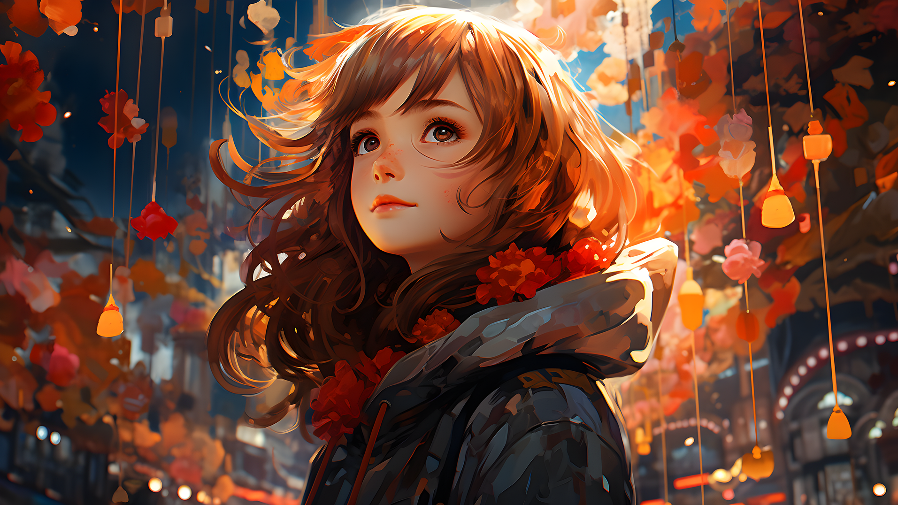
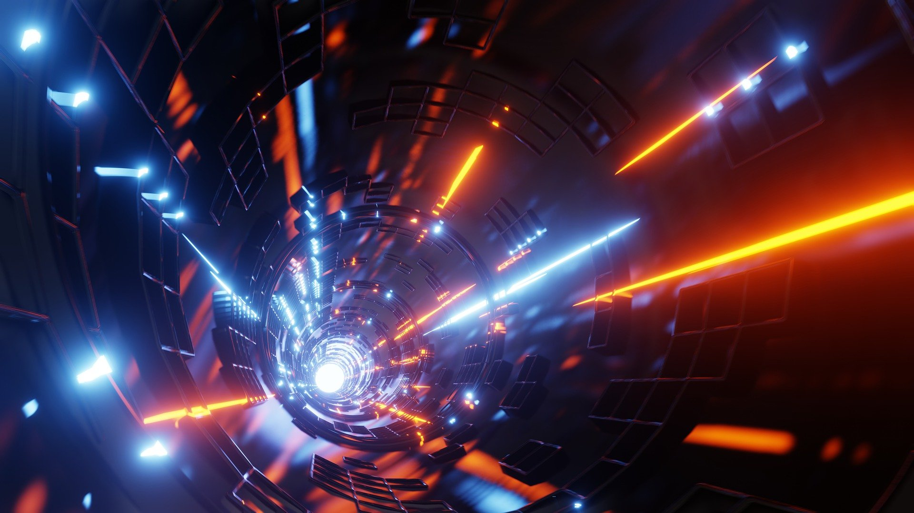
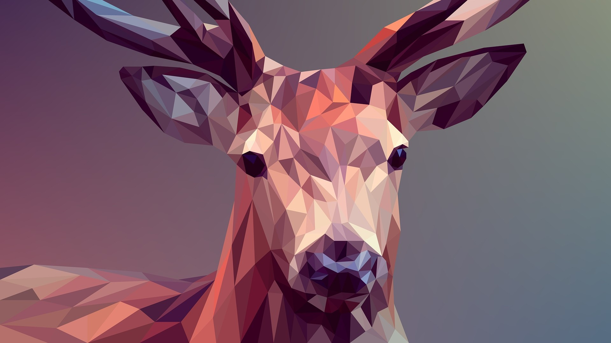
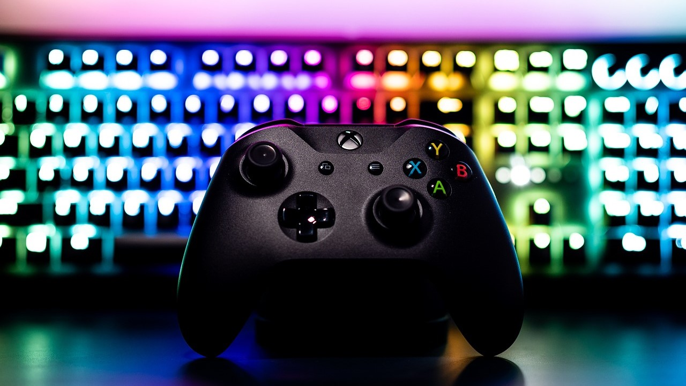

Üdvözöljük a számítógépes grafika világában, ahol a technológia és a kreativitás találkozik! A számítógépes grafika ma már számos iparág alapvető eszköze, legyen szó művészetről, játékfejlesztésről, térinformatikáról vagy webdesignról. Az oldalon részletesen bemutatjuk a grafikai hardvereket, a digitális rajzolást, a 2D grafikát és sok más izgalmas témát, hogy Ön is megismerhesse, hogyan használhatók ezek a technikák és eszközök a legkülönbözőbb célokra.
A grafikai hardverek fejlődése forradalmasította a számítógépes grafikát: a modern GPU-k (grafikus feldolgozó egységek) lehetővé teszik a gyors renderelést és a valós idejű grafikát, ami elengedhetetlen a videójátékokhoz és a 3D modellezéshez. A professzionális digitális rajztáblák és monitorok pontos és részletes rajzolást tesznek lehetővé, így a művészek és tervezők könnyedén alkothatnak kézi rajzolással egyenértékű digitális műveket. Ezek a hardverek biztosítják a precizitást és a teljesítményt, amelyre a kreatív projektek során szükség van.
A 2D grafika és digitális rajzolás a számítógépes művészet alapjaihoz tartoznak. A digitális rajzolás szoftverek, mint például az Adobe Illustrator vagy a CorelDRAW segítségével egyedi karaktereket, logókat és illusztrációkat készíthetünk. Ez különösen népszerű a rajzfilmiparban és a webdesignban, ahol fontos a karakteres, könnyen felismerhető stílus. A 2D grafikai technikák lehetővé teszik az egyszerű, de látványos vizuális megoldásokat, amelyek széles körben alkalmazhatók az animációktól kezdve a platformjátékok fejlesztéséig.
A térinformatika (GIS) területe és a webdesign szintén nagyban támaszkodnak a számítógépes grafikára. A GIS rendszerek különböző helyadatokat jelenítenek meg, segítve a pontos térképészeti és navigációs megoldások létrehozását, míg a webdesign célja az esztétikus és felhasználóbarát online felületek kialakítása. A platformjáték-fejlesztés pedig mindezen területek ötvözete, amelyhez kreatív karakterek, dinamikus animációk és intuitív dizájn szükséges. Fedezze fel oldalunkon, hogyan járul hozzá a számítógépes grafika mindezekhez az izgalmas és innovatív területekhez!
A rasztergrafika pixelekből áll, és olyan képszerkesztő programokkal manipulálható, mint az Adobe Photoshop vagy a GIMP, amelyek lehetővé teszik a fotók és egyéb képek részletes szerkesztését. Ezzel szemben a vektorgrafika matematikai egyenletekkel és geometriai alakzatokkal dolgozik, így bármilyen méretre nagyítható minőségromlás nélkül. A vektoros rajzprogramok, például az Adobe Illustrator vagy az Inkscape, kiválóan alkalmasak logók, illusztrációk és grafikai tervek készítésére.


A háromdimenziós számítógépes grafika (3D grafika) a digitális térben történő tárgyak és környezetek létrehozását és megjelenítését foglalja magában, amelyek mélységgel, szélességgel és magassággal rendelkeznek. E technológia lehetővé teszi a valósághű vagy stilizált 3D modellek készítését, amelyeket számos területen alkalmaznak, mint például az animációs filmekben, videojátékokban, virtuális valóságban, orvosi képalkotásban és ipari tervezésben.
Fedezd fel a 3D modellezés és animáció izgalmas világát, és válj a digitális művészetek mestereivé! Ezek a készségek nemcsak a játékfejlesztés és filmgyártás területén nyitnak meg számtalan lehetőséget, hanem az építészet, a virtuális valóság és a reklámipar számára is nélkülözhetetlenek. A 3D modellezés során virtuális tárgyakat és karaktereket alkothatsz meg, míg az animációval életre keltheted őket, a motion capture technológia pedig lehetővé teszi, hogy valós mozgásokat rögzíts és alkalmazz digitális szereplőidre.


A számítógépes videójáték-fejlesztés egy összetett folyamat, amely magában foglalja a játékok tervezését, programozását, művészi kidolgozását, tesztelését és kiadását. A fejlesztési folyamat során különböző szakterületek szakemberei dolgoznak együtt, mint például a játéktervezők, programozók, grafikusok, hangmérnökök és tesztelők. A modern videójátékok létrehozásához fejlett eszközöket és technológiákat használnak, beleértve a 3D modellezést, a fizikamotort és a mesterséges intelligenciát, hogy élethű grafikát, dinamikus játékmenetet és intelligens NPC-ket (nem játékos karaktereket) hozzanak létre.